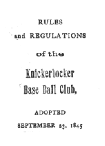
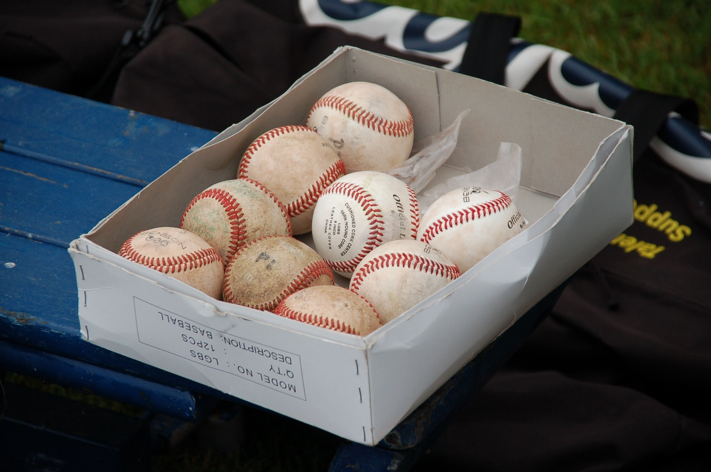

I hate baseball, but really, I love it. It’s frustratingly long and games frequently drag on for three or more hours with minimal action that you’re bound to miss. I love the elation that arrives with the storybook wins. At bats will sometimes take nine or more pitches with small eternities nestled between—and to sit through that sort of thing in a stadium, dozens of rows back, what torture! Despite the sometimes-desperate lack of action, most decent baseball fans would feel lucky to see a pitcher fling a complete game shutout in person—a unique baseball achievement where a single pitcher pitches an entire scoreless game. According to Baseball Reference, there were 16 complete game shutouts in the 2017 season and 36 in the 2016 season. In a Major League Baseball (MLB) season with 162 games for each team, and a total of 2,430 played across the league during the regular season, those odds are vanishingly small. It’s also a treat to see a particular player take the field with his unique style and level of craft. But baseball’s sexiest moment is undeniably the homerun, and you might look away at the wrong moment anyways, since baseball is frequently a game of sudden change or reversal. Still, some games will go without any particular excitement, and baseball in particular carries a unique duality of dormancy and excitement. Every at bat and inning is punctuated by timeouts and non-playing time where sudden bursts of playtime contradict the slow preparation in every other moment.
There are deeper threads that run through the game we see today, however. The MLB and fans contribute to a valorization, romanticism, and mysticism about the sport that reinforces its staying power—like World War Two as the last good war. Fans are distinctly romantic about baseball games. The game’s romanticism derives from a tradition of rules, questionable tactics like the “beanball,” and the valorism attributed to the long trail to the major leagues. The modern MLB also carries a peculiar mystic character to it. The mysticism mostly confines itself to the League office and describes its deliberate role in altering the game throughout the years. But it closely embeds itself within an unverifiable curiosity about the occluded deep-time possibilities of baseball’s origins and the apocrypha in the game’s legends. That mystic character is not just a product of the unverifiable, but also of the conspiratorial and questionable hand of the League in the most controversial issues that have faced baseball in the last thirty years. The mystic and romantic overlap and conflict where sabermetrics, the usage of advanced statistical analysis in baseball, meets random luck and the unpredictable—where the soothsayer meets the indefatigable wrath of the divines, the unforeseeable. Despite the analytics and rule changes, in its everyday form, this game is an endearing latent expression of human struggle.
Curiosity and mystery infect baseball’s origins and age, but that mystery is rarely obvious in the game played today. With the League’s coalescence as a single entity and increased power, that curiosity transforms to a mystic and conspiratorial character extending from the MLB in its ivory tower. The historic rule changes and policy decisions cement the League as a shadow hand, controlling the larger decisions of the game from beyond. Baseball is an exceptionally old organized sport and its antecedents are even older. The World Baseball Softball Confederation (WBSC) appeals to the imagination, noting that ancient Egypt may have played a game with bat and ball. Games resembling baseball were played on continental Europe as early as the 14th century. There is evidence that English baseball—different from American baseball—was played at the end of the 18th century. The MLB’s “Baseball Memory Lab” identifies over 100 sports similar to baseball, although they are not necessarily related. In 2011, the League created a “Baseball Origins Committee” composed of 12 experts and historians to “seek to determine the facts of baseball's beginnings and its evolution.” The project has had a large focus on the “local origins” of baseball in the pre-MLB era. (The committee was due to publish official reports, but it simply directs the user to a series of blog entries about baseball in particular historical moments and places.) And here, baseball begins to feel like a kind of eventuality, a natural progression of sports with bat and ball. It was more likely synthesis and a bit of luck.
There is also some disagreement over who created the seminal rules of American baseball. Two people routinely receive credit: Abner Doubleday and Alexander Cartwright. It is now believed that Cartwright created the first iteration of baseball, but for some time, Doubleday received that recognition. It was widely reported that Cartwright received that credit from Congress in 1953, but according to Adam Berenbak writing for the Society of American Baseball Research, there was no record that Congress gave Cartwright that prestige in 1953, nor any date after, despite multiple sources claiming so. In later Congressional resolutions, there is even record that both chambers backed the so-called “Doubleday Myth.” The National Baseball Hall of Fame is even located in a small town, Cooperstown, New York, where Doubleday is said to have created the game. The relativist in me says that the true progenitor of baseball isn’t terribly meaningful—you can draw that line wherever, depending on how you define what baseball is. However, no one is rushing to clear that mystery up and it continues to contribute to a mystery that groups like the WBSC encourages. The question, “how long has baseball been played?” becomes less answerable, and the clarity of an out call stands in contradiction to the obfuscated origins of the game.
The rules and constants of the MLB-recognized game have undergone numerous changes over the years to resemble the game we sit through in a forty thousand-seat stadium. The Knickerbockers, playing in 1845, carried rules that are familiar to us today: “that in no instance is a ball to be thrown at [the runner]”; “all disputes and differences relative to the game, to be decided by the Umpire, from which there is no appeal”—okay, that one is a bit different these days. Some were a bit less familiar: If a ball is hit “and caught, either flying or on the first bound, it is a hand out”—emphasis mine. Eventually the nascent baseball league, created in 1871, led to the MLB rules we see today—not without a bit of jockeying for which league was the true professional league, until both the AL and NL were formed by 1901. Still, some rules that made it into what can be called the first MLB rules are at odds with the today’s game. In 1888 a hitter would be credited with a base when the batted ball hit a runner. Until 1931, defensive interference only applied to the catcher. The MLB now carries a 186-page complete rulebook on its website. But the groups with a stake in the game continue to refine and revise the rules. The MLB instituted instant replay in 2008 and more recently has altered the legality of particular slides at home plate and on double plays at second base. Some rule changes could surely be construed as a removal of bad rules to refine the game, while more recent ones show the organization operating the pieces of the game with a level of deliberation in reaction to the currents of popular opinion and even player safety. The League has been changing rules for years, but each rule seems timeless because of the near-legalese of the rulebook. 
1901 to 1920 was known as the “deadball” era—offense was minimal and balls themselves were overused. It’s not an enthralling picture when a game is called “dead” anything. From 1920 onwards, in part because of rule changes that required ball replacement more frequently throughout a game, and in part because of a change in the material of the ball, offense increased. This period onwards is known as the “liveball” era. Offense fluctuated as the League experimented and world events took place on this smaller stage. During World War Two, the ball suffered from a shortage of material and decent players. The strike zone expanded and contracted once each in the 1960s causing a corresponding decrease and increase in offense. The American League’s addition of the Designated Hitter was designed to pump offense. The ball itself continued to change during that time, possibly contributing to corresponding changes in offense. Taken from a long view, the trend is that the League and its associated groups have definitively altered the game in subtle ways to manufacture a more playable and interesting game. That growing mystical character of the “deep state” commissioner’s office, despite a game played in front of millions of fans a year, has extended to modern baseball.
As we step into the last twenty to thirty years, the modern MLB office—separate from the game itself—begins to feels like a shadow group, like a puppeteer organization with their fingers on the strings. It’s easy to say that the home run is baseball’s most exciting play—and that’s something that likely drives viewership. The League’s vacillating relationship with offense has been painfully obvious over the last 30 years, through the steroid era, and into an era of ninety-six-plus MPH fastballs. The steroids era, by some accounts, began around the late 80s, and lasted through the mid aughts—and offense ballooned along with fandom and revenue. One can easily posit that, with the home run in mind, the MLB and owners had a stake in keeping the game exciting. Although the MLB implemented the first steroid tests in 2003, the terms didn’t have teeth in them until 2006 when players would be suspended for 50 days for a first offense, and up to life for the third. That some of the game’s biggest stars were using performance-enhancing drugs—Barry Bonds, Mark McGwire, Alex Rodriguez—is now common knowledge. The League’s lobbying hovered around $1 million per year during that time, before dropping, and shooting back up in 2016. Whether the League turned a blind eye or not, they benefitted from the increase in offense and subsequent allure. But, with their slow pace to acknowledge a problem, and the slower pace to adopt punishment with teeth, the League increasingly assumed a character of collaboration. 
Steroid use was a distinct problem of baseball ten and twenty years ago, but the shadowy hand is still there. There was strong evidence that after the All-Star Break in 2015 that individual baseballs’ physical character had changed, resulting in the highest number of home runs hit since 2000 at the height of the steroids era. The current replay system has received no shortage of criticism for its lack of transparency. A single umpire in New York with multiple video angles makes a final call. The umpire either confirms, overturns, or lets the original call stand without enough evidence to change. The result is that no one besides the game’s crew chief, the umpire who made the call, and the satellite umpire, know what the change is and what it’s based on. People aren’t happy when they’re deprived of information. Maybe the deep origins of baseball are amusingly unclear, but the League is most focused on the longevity of its game, and in doing so, is creating the intriguing narrative of their semi-visible hand. There is a disconnect between the hearty game that is played on the field, and the owners and commissioner’s office that pontificates.
The history, rarity, randomness, and continued mysticism of the MLB combine to create this sort of romantic apogee about a game that feeds fans and almost dominates sports networks for nearly half the year. Users on the Baseball subreddit routinely ask, “How can you not be romantic about baseball?” There is a poeticism to the game’s absurdity—when you least expect an event to happen, it happens. Beyond the common fan, there is a whole field dedicated to the analysis and crystallization of those happenings into data: sabermetrics, created by the Society of American Baseball Research. Sabermetrics received pop culture relevance with the success of the Oakland Athletics and Billy Beane, and the book and movie, Moneyball. There is average, home runs, runs batted in—the standard measurements—and then you have wins above replacement (WAR), defensive runs saved (DRS), win probability added (WPA), and a slew of other predictive, advanced metrics. Sabermetrics has gained a great deal of credibility in the last decade or so, with many general managers basing their team’s direction on the predictive data. But, in effect, what it has produced, is the hope to predict the future using probability and data—data scientists are the soothsayers of the game and we the wanton traveler seeking advice for our fantasy team. The League is fickle fate and we cannot hope to get in her way.
According to sabermetrics, what contributes to winning a baseball game is often multilayered. Having more points (runs) than the opponent is how you win, sure, but arriving at that point requires a prolific culmination of factors—or not at all. A game can be broken into pivotal innings and mistakes, or fractured into the probability of an outcome in a specific count with runners on against a particular pitcher. Managers can seize on their best chances using that wealth of situational data fed to them from their team offices. Yet sometimes the improbable can turn the momentum: a rare walk from a veteran pitcher; a poorly hit ball sneaks in for a hit; the nearly unchallengeable word of an umpire switches the game momentum. Or, the rookie catcher making it on base 1 in 5 plate appearances (that’s bad), hits the go-ahead home run, and has the best night of his career, carrying the team on his back. At that point, you can throw out the “sabermetricians” and explain that some things are blind and random. Dethrone the soothsayer, because he can’t predict everything.
The romanticism does not end with the sometimes-incoherent nature of how a team wins a baseball game. Making it to “the show” is of course the apotheosis of many players’ careers—besides the naturals—but is also very often the culmination of years of toil in the minor leagues. According to a 2012 report, 66% of first round drafts make The Show, and 49% of second round draft picks. Those odds diminish the further one falls in the draft, to say nothing of the tribulations in that path: stunted baseball development, being dropped from club after club, or simply remaining static and spending too many years in the minor leagues. Ascending to the League is the righteous reward for those players who were not first-rate talents. It’s the musicians equivalent of sleeping in tour vans and playing for empty clubs, and to finally make it big for a couple tours. Minor leaguers are now exempt from minimum wage; a suit as recent as 2016 alleged that MLB’s minor leagues violated the Fair Labor Standards Act, pushing many minor leaguers’ salary below the poverty level. On the other hand, the major league minimum is $545,000 in 2018. As fans, we hope that every “kid” gets his shot to be a contributor to the club, that dreams manifest as reality, and that we get that warm fuzzy feeling of having been there to see the bloom. Few things are thought of as righteously and romantically as having been the first—the first hit, the first home run, the first to have seen that. It's the appeal to a love of this slow sport where statistics and the long slog in the minor leagues are valorized as an ultimate success, the culmination of so many years of toil.
Where baseball takes on its most romantic character is in its betrothal of constant failure. Consider the meaning of skill in baseball. Like in all sports, every person we see on the professional field has been culled to reach this moment for most of their life, and they are considered the lucky ones, the most skilled and talented of their peers, to have arrived at The Show. Aside from defense in baseball, where traditional metrics measure skill in negative terms—how many errors someone has committed or how many runs were given up—batters’ skill is usually expressed in positive terms that are dizzyingly full of "errors." That is, if a batter hits the ball into the field of play and reaches base one-third of the time, he is considered skilled and probably ranks top among his peers. Put otherwise, if he fails two-thirds of the time, he is considered very skilled. Pitching is similar. If a pitcher gives up three or less runs in a game and completes the sixth inning, it is referred to as a “quality start.” Pitchers who generally give up less than 3 runs in a game are considered more than decent. Traditional metrics—earned run average (ERA), batting average—have been around since the beginning and they are measures of how few or how many mistakes someone makes. They are foundational to the yardstick that baseball measures its players with and the corresponding mindset.

That said, most hitters don’t succeed one-third of the time, but rather fail around three-fourths of the time. Most starting pitchers don’t give up an average of three or less runs per game—they give up more. Some of these players are only decent in high-leverage situations or are late-inning defensive replacements, but at any given time with regular rosters, there are at least 750 players ready to get their shot and struggle against failure in front of thousands of eyes. These 750 players’ encounter with failure is nearly unending, like human life.
Baseball players face their own mistakes as a routine part of the game. They snuggle with relentless failure and return again and again to the location of personal trial without any hesitance that fans can discern. They are expected to be fearless, perhaps stoic in their endeavors. There is an admiration about someone who can continue to expose himself to failure. The admiration extends into legend making on the field. Things like Buckner’s error, Canseco’s nearly caught home run, or Ruth’s infamous point, stand above the player and their actual performance. The cult and legend of a player sits neatly beside the constancy of mistakes, because while a player might not be remembered for his stats in a certain year, if he makes a memorable play, he just might outlive his failures.
Many consider baseball a refuge from the rest of our lives, where politics, social issues, and the implications of throwing an object 95 miles-per-hour at someone’s head is simply a matter of tradition. But baseball is as much a respite from our daily life as it is a latent expression of it. In this representation of life is the admission that we all fail repeatedly and must do so to reach some measure of success; perfection is impossible. And so, while we would normally not realize it as we curse our team’s pitcher for giving up a few too many home runs, he has not yet given in. He will return for his next start, or when the manager trots him out from the bullpen, and he will pour himself into the game until he can no longer work at that level—because how often does a baseball player quit because of anything other than injuries or age? Those are the same reasons one ceases to live. Together with our favorite baseball players’ incoherent commitment to effort in the face of numbing failure, we, too, return to the television, our laptops, the ballpark, to see a collection of failures and successes culminating in a momentarily meaningful win. Perhaps they rub off on us and we are stronger for it.
Baseball—or most sports’—appeal to a higher meaning, routinely takes the form of some love of the game, or for a country. Sports frequently intertwine themselves with a casual patriotism and serve as a game’s purpose—especially in the World Cup, for example, or in a domestic sport bound with a country’s history. Baseball, being no exception, binds with both of those, especially as “America’s pastime.” And fans routinely accept either the hyper focus on craft as the purpose of baseball, or the appeal to tradition and American cultural history as the fundamental meaning of baseball. That’s only the case if we rise above the day to day of the game.
The League and fans are consistently reshaping the character of that meaning. There is a consistent morphing, if not a battle, for how baseball’s history and legacy are received and interpreted. It is continuous memory making at odds with how the game comports itself as untouched and everlasting. If baseball is America’s pastime and a cultural institution that holds as complex a history as any cultural organization, then, unquestionably, it has changed and will continue to do so. Fans will continue to take part in changing the meaning as they ascend to the pedestal of true fan. Membership as a “true” fan allows people to become a part of the cultural institution of baseball and engage in memory-making through typical romanticism, or as I’m doing here, writing that failure is a critical aspect of what the game means to us as fans. As the game is reinterpreted and reformed by fans and League respectively, nebulous expressions of the game as “America’s pastime,” reconfigure to include baseball’s prevailing mindset. At one point, steroids were an affront to the game, now they’re less of a concern in game play and more important for the hall of fame. The narrative and play of baseball is in flux and won’t cease to be—but it’s simple to forget that in a game dominated by day-to-day schedules that take so many hours.
And so, this is why I can say that I hate baseball. But I also love it. I can be enthralled by the stupid luck that factors into my team’s loss, or amazed that any number of game events turned to my team’s favor. Very often, just when you thought you’ve come out alive, without a heartbreaker night, with every safety mechanism in place, you’ll find that your favorite team has broken your heart, turn the game off, and go to sleep frustrated. Or, you’re on the opposite side and it’s elation. The apocryphal character of the game—in both how it is won, and how it was created—contributes to the fluid romanticism and mysticism that spreads throughout both the ballpark and game at large. It is the deadball era or the League’s role in juicing balls since at least 2015. Sometimes it feels like a deep state conducting a game on a field that isn’t connected to the fans, who rise with anticipation from a fly ball. It begins to feel like the League’s deep state character is directly working against the “tradition” of baseball or perhaps more accurately, the legend of baseball as a historically untarnished game, while fully endorsing the idea of a tradition. I don’t even malign the League for its shadow hands, nor do I care how transparent it remains on most issues—it’s probably swell for business anyways. The MLB was slow to modernize and incorporate technology, drawing on traditions for inspiration rather than anything else—like the tradition of player superstition or aforementioned “tradition” of throwing at a batter’s head for pimping a home run—all equals. It is the cruelest of games, and the most winsome of games. I can’t stand not watching it as much as I can’t stand watching it—and I’m not sure who’s responsible for my love of it.